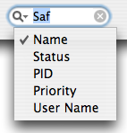

Using The Search Field
The search field, located at the bottom right corner of the application manager's window, is the quick and easy way to find a application or group of applications you want to manage. You can search using of one of the four criteria (application's name being the default criteria):
- Application's name
- Application's status (running or paused)
- Application's processor ID (PID)
- Application's processor priority (numeric value if numeric priority display is enabled)
- User-name the application is running under (numeric value if numeric user-name display is enabled)
To change the search criteria simply click on the little magnifying glass in the search field and choose your desired search criteria from the drop-down menu.
In addition to simply clicking on the search field to start searching you can also use ⌘F to activate it.
